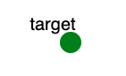

Overview
The purpose of this exercise is to help you understand a hash-collision denial-of-service (DoS) attack and its mitigation. In this exercise, you will exploit and mitigate a hash-collision DoS vulnerability.
Required Reading
Introduction
A hash-collision DoS attack exploits the worst-case execution time of a hash table data structure. A hash table uses a hash function to map entries to an index in a table. On average, the time it takes to store and retrieve data from such a data structure is independent of the number of entries. However, this is only true when entries are spread evenly across the table. When many entries map to the same index (called a hash collision), the performance can degrade significantly and lead to DoS. We recommend reading and understanding how hash tables work (especially the algorithmic complexity of their operations), as well as hash-collision DoS attacks, before proceeding.
Assignment Instructions
Setup
- If you don't have an account, follow the instructions here.
-
Create an instance of this exercise by following the instructions here, using
hashcollisionas Lab name. Your topology will look like below:
. - After setting up the lab, access your target node.
Tasks
On target node, switch to /tmp/target/exercise folder. Compile the program:
bash compile.shThe program main is a simple program that takes a number of strings, one per line, and stores these in a hash table. It can be run with
./main Nwhere N is the length of the input strings (including the newline character).
Exploitation
The program main is vulnerable to a hash-collision DoS attack. We include the Python script exploit.py, which can be used to exploit this vulnerability. It will pass a linearly increasing number of either random or malicious strings to main, to store in the hash table. Run the program with --help to learn which parameters it takes. The malicious strings will trigger many hash collisions, causing execution time to increase polynomially. The random strings, on the other hand, will not trigger hash collisions (or significantly less) and therefore the execution time will also only increase linearly. The script measures the time it takes the program to process the strings and stores these time values to a file, in JSON format. You can plot the execution time of processing malicious strings against that of random strings with the plot_times.py script. In order to prove a program is vulnerable to a hash-collision DoS attack, you need to show that the worst-case execution time is an order of magnitude worse than the best-case (polynomial vs linear). Play around with the exploit.py script, generating both malicious and random input until you find parameters that clearly show the difference in execution time growth. Plot these execution times.
Mitigation
The vulnerability stems from the fact that all the malicious strings map to the same table index when hashed by the hash function. This hash function can be found in function named "hash" in the hash.c file. To mitigate this vulnerability, you need to change this function so that an attacker cannot reliably generate colliding strings. This can be achieved by using a random hash function. Such hash functions randomize their output using a secret key. If the attacker does not know the key, it is impossible to know which strings will collide. One such function, created specifically to protect against hash-collision DoS attacks, is the SipHash function. As it is not recommended to reimplement secure hash functions on your own, you can use one of these implementations of SipHash: one and two. You can use the getrandom system call as a secure source of randomness for the secret key of SipHash. After making the change, remember to recompile with
bash compile.shThen, repeat the experiment done in the Exploitation section, with the same parameters and redraw the graphs. Now, there should be no significant difference between execution time growth between the malicious and random strings.
Submission Instructions
You should submit one tar-zipped file, containing the following:
- Your patched
hash.cfile. - The graph showing the successful attack on the vulnerable program.
- The graph showing the failed attack on the patched program.